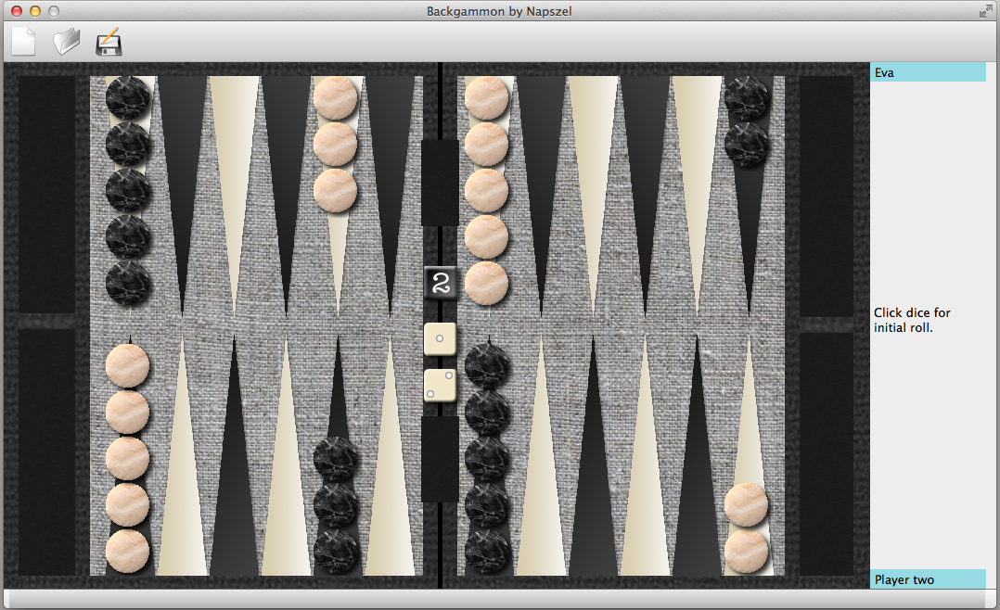
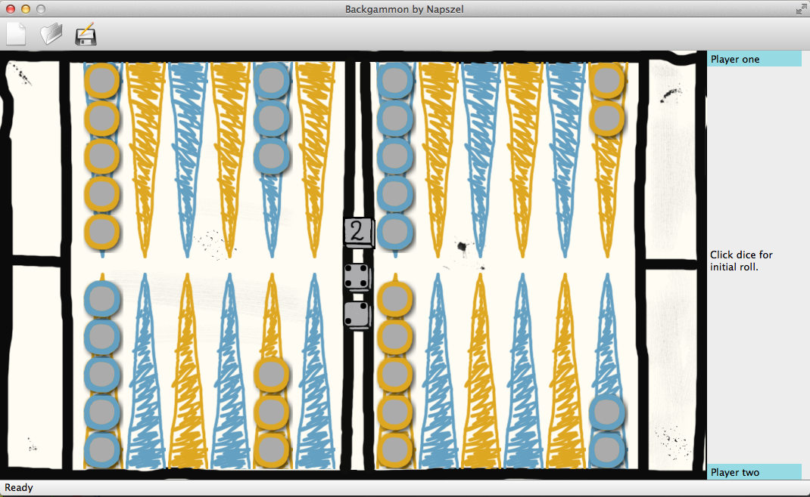
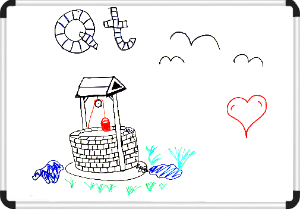

About the project
The project's goal was to create a Qt based Backgammon game with networking. It started in May, 2009. The creator is Napszel. The first versions were created on GNU/Linux with the GNU Emacs (text editor) as the development environment. However, in 2015 it was moved to MacOS and I started using Qt Creator. The code is written in C++, using Qt 5.{kind=link}

{kind=link}

Features:- load
- save
- auto save
- change style
- set player's name
- last game loads back on startup
Sourcecode:
You can check out the sourcecode and follow its progress on github.
Try it on...
Linux or Mac:
You can download the latest version from github and compile it. Check out the Download page for help.
Windows:
You can download my compiled version from the Download menu, however that might not be the latest version.
Name
Its name comes from the play on the word Qt, which is pronounced cute in English. So a Qt based Backgammon becomes CuteGammon : ). Also, in Hungarian, cute is pronounced like the Hungarian word 'kút', meaning well in English...